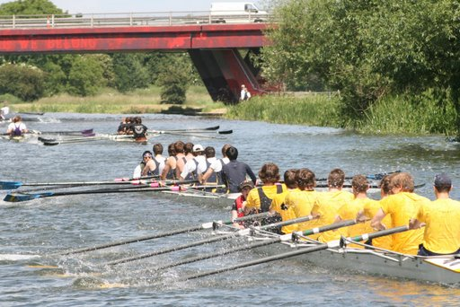

Welcome to this sample webpage about the sport of rowing/crew
These are some key rowing terms:
These are some boat classifications:
| Name | Shorthand | Sweep or Scull? | Number of Rowers | Coxswain? | Special notes |
|---|---|---|---|---|---|
| Single | 1- | Scull | 1 | No | |
| Pair | 2- | Sweep | 2 | No | |
| Coxed Pair | 2+ | Sweep | 2 | Yes | These are rarely seen nowadays. They were more common in past decades. |
| Double | 2x | Scull | 2 | No | |
| Coxless Four | 4- | Sweep | 4 | No | Not too common. |
| Coxed Four | 4+ | Sweep | 4 | Yes | |
| Quad | 4x | Scull | 4 | No | |
| Coxed Quad | 4x+ | Scull | 4 | Yes | Rarely used. |
| Eight | 8+ | Sweep | 8 | Yes | |
| Octuple (Oct) | 8x+ | Scull | 8 | Yes | Rare. Sometimes used to train novices. |
One key website is the official USRowing website. It is a good website because it contains a wealth of information and employs a good use of HTML features. On the downside, it is crowded with information and can be difficult to navigate. It is also not particularly newbie-friendly.